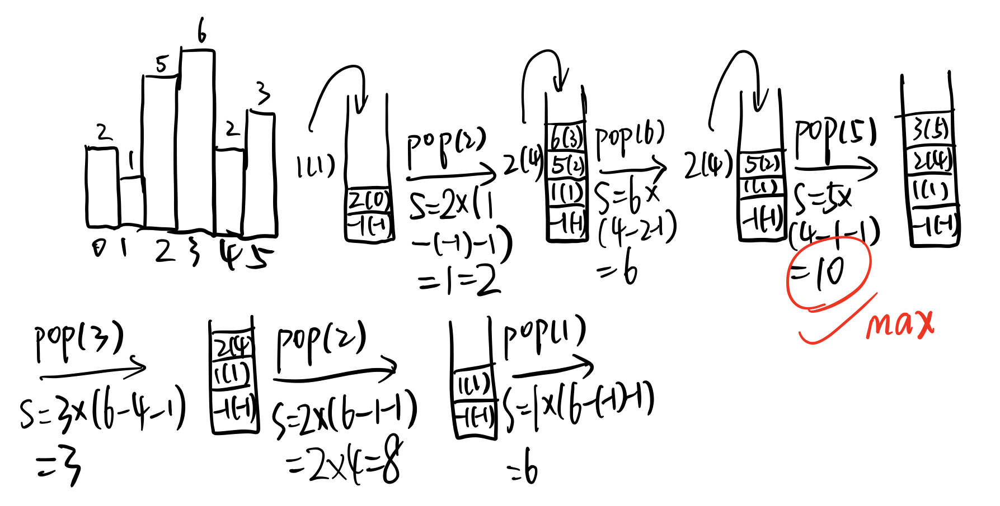

84.柱状图中最大的矩形
给定 n 个非负整数，用来表示柱状图中各个柱子的高度。每个柱子彼此相邻，且宽度为 1 。
求在该柱状图中，能够勾勒出来的矩形的最大面积。
以上是柱状图的示例，其中每个柱子的宽度为 1，给定的高度为
[2,1,5,6,2,3]。
图中阴影部分为所能勾勒出的最大矩形面积，其面积为
10个单位。示例:
2
3
>输出: 10
>


暴力法
最容易想到的就是暴力法。对每个柱子向两边去扩展，直到扩展到比当前柱子矮为止。时间复杂度为$O(n^2)$。
递增栈
本题理想的解法是递增栈。递增栈这个名词我也是第一次接触。顾名思义，递增栈是一种维护栈，需要维护栈内的内容是递增的（递减栈同理）。维护递增栈可以高效地找到当前元素某一方向上的第一个比他大（小）的元素。按常规方法完成这一任务需要的时间复杂度为$O(n^2)$，但因为使用单调栈每个元素只需要入栈+出栈一次，故时间复杂度为$O(n)$.
例如，POJ上有这样一道题：有一群牛站成一排，每头牛都是面朝右的，每头牛可以看到他右边身高比他小的牛。给出每头牛的身高，要求每头牛能看到的牛的总数。采用单调栈的话，维护一个递减栈即可。
再回到本题，本题采用单调栈的原因是相对较矮的柱子限制了矩形的面积。维护一个递增栈：从左至右柱子依次入栈，如果遇到打破递增规则的柱子，则出栈，并记录此时的面积。步骤如下：

如图所示，拿最后一步1出栈为例，由于是递增栈，index=6与index1之间和index=1与index=-1之间的柱子的高度一定比1高，所以可以全部扩展（宽可扩展至6）。
代码如下：
1 | struct rec{ |
85.最大矩形
给定一个仅包含 0 和 1 的二维二进制矩阵，找出只包含 1 的最大矩形，并返回其面积。
示例:
2
3
4
5
6
7
8
9
>[
> ["1","0","1","0","0"],
> ["1","0","1","1","1"],
> ["1","1","1","1","1"],
> ["1","0","0","1","0"]
>]
>输出: 6
>
二维递增栈
本题可以直接转化为84题。即把每一行及其以上看做是一个柱子，遍历每一行，得到最大的面积。要完成此转化过程，需要先计算每一行对应的柱子的高度，生成一个新的矩阵。然后再对这个矩阵的每一行调用84题的函数即可。
以上述示例为例，转化新的矩阵如下：
1 | [ |
代码如下：
1 | struct rec{ |